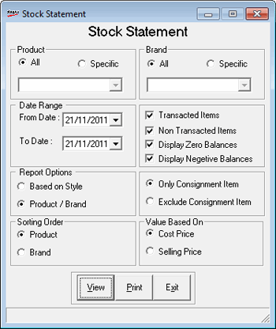

The Stock Statement report provides information on the quantity and value for opening balance, net inwards, net outwards and closing balance. It can be generated for selected products and brands, and for all the items in stock or for only those items transacted during the selected period.
How to reach: Reports > Stock > Statement
The Stock Statement window is displayed.

Product: Select All or Specific. If you have chosen Specific, select the product from the list.
Brand: Select All or Specific. If you have chosen Specific, select the brand from the list.
Date Range: By default, the From and To dates are the current Shoper date. You can enter any date range but the To date cannot be greater than the Shoper date.
Report Options: Select Based on Style or Product / Brand to group the details accordingly.
Sorting Order: Select Product or Brand to sort the report accordingly.
Transacted Items Only: Select to include transacted items alone in the report.
All Items: Select to include all items in the report.
Display Zero Balances: Select to display the items with zero stock quantity. This option is selected by default.
Display Negative Balances: Select to display the items with negative stock quantity.
Select Only Consignment Item or Exclude Consignment Item to generate the report for consignment items alone or for all items other than consignment items.
Value Based On: Select Cost Price or Selling Price to display cost prices or selling prices in the report.
Note: The Cost Price can be hidden by the administrator based on user-wise restriction.